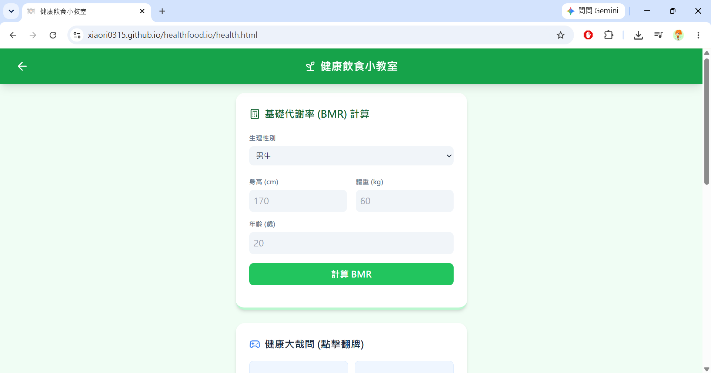
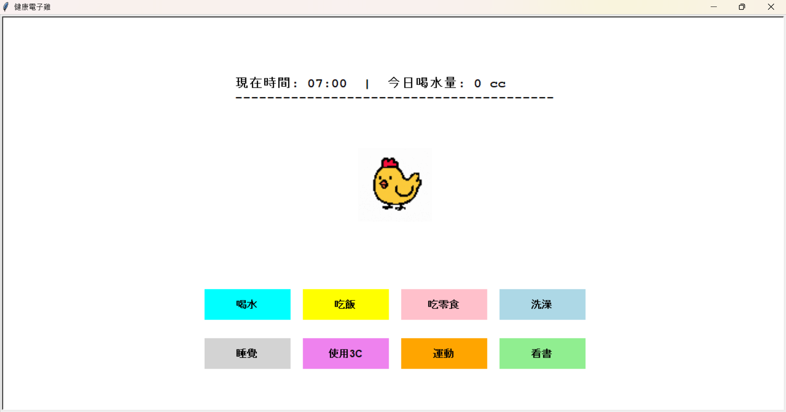
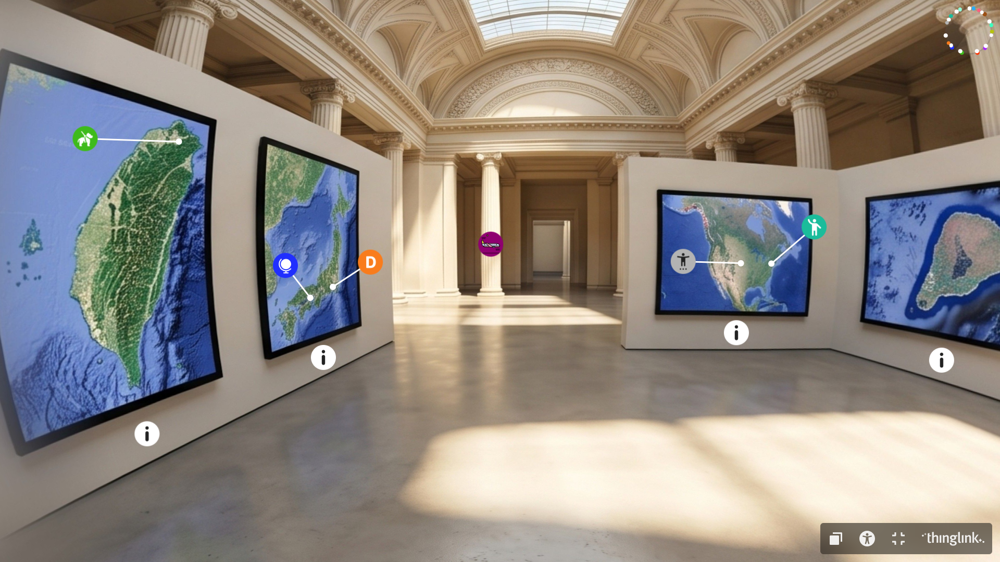
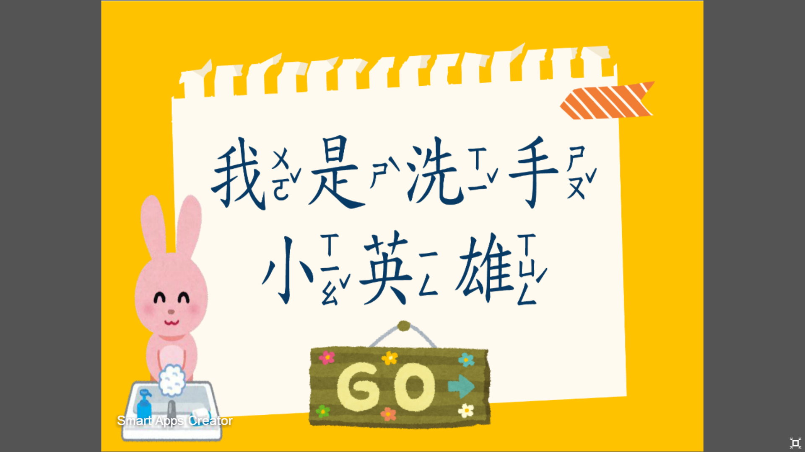

精選專案作品
涵蓋 Web 應用、互動遊戲與沉浸式體驗教材

整合「校園周邊店家抽籤輪盤」、「基礎代謝率 (BMR) 自動計算機」與「健康飲食衛教小遊戲」。透過生活化情境引導使用者關心每日營養攝取與卡路里平衡。

以復古電子寵物養成機制為靈感，結合生活衛教知識。玩家的健康選擇直接影響電子雞的生命狀態與心情指數，讓衛教學習變得有趣且具黏著度。

專為歷史與地理文化設計的 VR 沉浸式互動遊戲。引導學習者走入虛擬場景親身體驗各國風貌，打破傳統課本教材的空間限制。

針對幼稚園與低年級學童量身訂做的趣味洗手衛教教材。運用生動的角色動畫與口訣引導，讓學童在遊戲式氛圍中熟練掌握正確洗手步驟。
核心能力與專長
具備教學設計概念，能將複雜的衛教、歷史等學科知識簡化為故事腳本、動畫與遊戲化關卡。
熟悉網頁互動邏輯開發、基礎運算（如數值計算機、抽籤邏輯）與介面排版，讓教材具備即時互動性。
兼具北護醫護背景與數位教育敏銳度，能精準洞察使用者需求，提供具備實質教育意義的數位體驗。